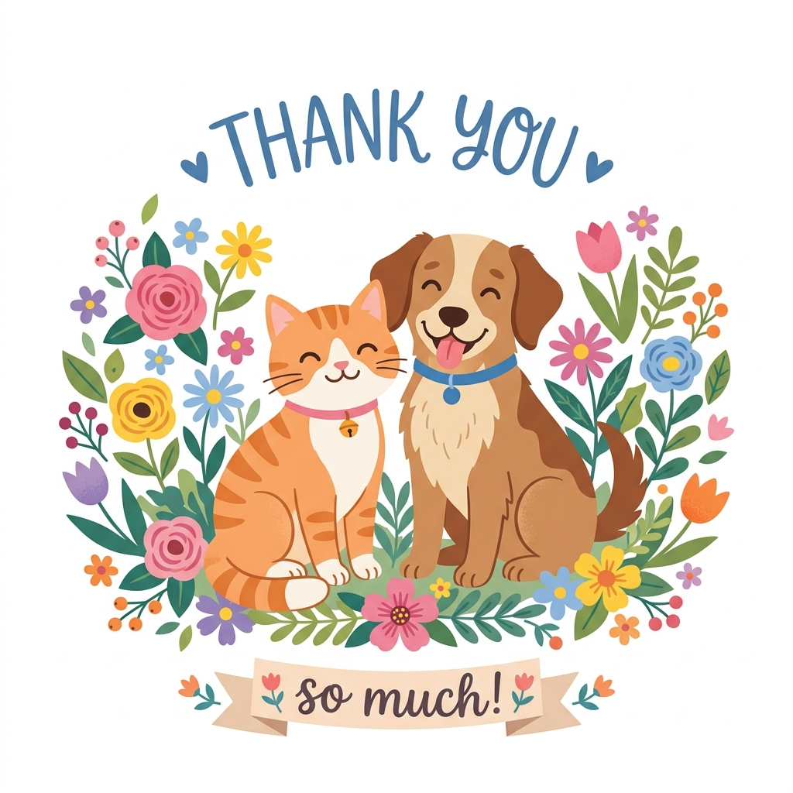

시스템 개발 생명주기(SDLC)에 따른
분석 및 설계 산출물 목차
반려동물의 생체 정보(체온, 심박수, 활동량)를 IoT 목줄을 통해 수집·분석하여 그에 맞는 최적의 건강 상태 분석 및 맞춤 케어를 추천하고, 수의사에게 데이터를 공유하는 시스템입니다.
반려견의 식습관 및 건강 이상 증상을 보호자가 육안 관찰 후 수동으로 기록해야 하므로, 미세한 신체 변화를 놓치기 쉽고 주관적 해석으로 기록의 정확성이 결여됩니다.
반려동물은 통증을 스스로 말로 표현할 수 없어, 질병이 임상적 증상으로 발현되어 병원을 찾았을 때는 이미 중증 이상 진행된 경우가 많아 골든타임을 상실합니다.
전문 수의학적 근거나 체온, 심박 등 객관적인 데이터 없이 커뮤니티 추천이나 과장 광고에 의존해 영양제나 사료를 임의 처방 급여하여 간/신장 기능 부작용을 야기합니다.
1. 가벼운 스마트 목줄 및 IoT 급식기 연동을 통한 실시간 건강 데이터 수집 인프라 구축
2. 보호자 입력 최소화 및 생체 데이터 수집의 정확도 극대화
1. 기계학습 기반의 생체 신호 분석을 통해 반려견별 건강 기준(Baseline) 수립 및 이상치 실시간 감지
2. 질병 조기 예방 및 위급 상황 자동 알림 시스템 구축
1. 수의사 및 전문 동물 영양학 기준 데이터를 기반으로 사료 및 영양제 추천 필터링 구축
2. 수의사 웹 포털 연동을 통해 원격 모니터링 기반 상담 및 정밀 진찰 지원
시스템과 외부 엔티티(실체) 간의 최상위 자료 경계를 명시한 흐름도입니다. 모든 자료 흐름은 명사로 정형화되었습니다.
모든 처리기(1.0~5.0)는 동사형 명사("관리", "발송")로 종결되어 명확한 동작의 의미를 부여합니다.
모든 자료 저장소는 "파일" 명칭을 준수합니다.
모든 데이터 흐름선이 완전한 대칭 병렬 구조로 정리되어 선들이 뒤엉키거나 교차하는 단점을 완벽히 해결했습니다.
라벨 마스크에는 부드러운 외곽선 테두리를 적용해 다이어그램 도식 설계 규격을 충족합니다.
자료흐름명칭은 모두 문서 및 로그 형태의 명사 명명 규칙을 철저히 준수하여 정의하였습니다.
| 자료 흐름명 | 자료 정의 (Data Structure) |
|---|---|
| 회원가입신청서 | 이름 + 생년월일 + 이메일 + 연락처(휴대폰) + 보호자 주소 + 희망 아이디 + 비밀번호 |
| 반려견등록서 | 보호자 아이디 + 반려견 이름 + 품종 + 반려견 생년월일 + 성별 (중성화 여부) + 몸무게 + 주요 기왕력 및 알레르기 유무 |
| 기기연동요청서 | 보호자 아이디 + 반려견 식별코드 + IoT 기기 시리얼 번호 + 기기 모델명 + Wi-Fi 연결 비밀번호 + 생체 정보 수동/자동 수집 동의 여부 |
| 실시간생체데이터전송포맷 | 기기 시리얼 번호 + 반려견 식별코드 + 데이터 수집 타임스탬프 + 실시간 체온(℃) + 실시간 심박수(bpm) + 3축 가속도 센서 값(X, Y, Z) + 배터리 잔량(%) |
센서 데이터 유입부터 AI 엔진 가동, 의학 임계값 판정 및 수의사 연계용 자료 적재 프로세스 설계입니다.
IoT 센서로부터 전송되는 데이터 타입 및 AI 요청 포맷을 정의한 자료사전 테이블입니다.
| 자료 흐름명 | 자료 정의 (Data Structure) |
|---|---|
| 실시간생체수집로그 | 반려견 식별코드 + IoT 시리얼 번호 + 금일 총 걸음수 + 시간당 평균 활동량 + 최근 1시간 평균 심박수 + 최종 측정 체온 |
| AI이상징후분석요청서 | 반려견 식별코드 + 품종 및 연령 기준 임계값 테이블 + 최근 24시간 실시간 생체 데이터 시계열 리스트 + 분석 시간 범위(시간단위) |
| 건강지표보고서 | 반려견 식별코드 + 분석 날짜 + 종합 건강 지수(0~100점) + 생체 정보별 판정 상태(정상/주의/위험) + 감지된 이상 상태 설명 + 추천 행동 가이드 |
| 맞춤케어추천서 | 보호자 아이디 + 반려견 식별코드 + 추천 일자 + 주요 건강 부족 요인(관절/소화/피부 등) + 처방식 사료명 + 추천 필수 영양제 + 일일 권장 급여량 |
보호자, 반려동물, IoT 기기, 생체기록 간의 논리 스키마 설계를 도식화한 ERD입니다.
PK(기본키) 및 FK(외래키) 관계가 구조적으로 연동되어 있습니다.
IoT 목줄 센서와 실시간 연동되어 수집되는 반려견의 생체 정보를 대시보드 그래프로 표현하고 분석 이력을 관리합니다.
수집된 반려견의 바이탈 및 기초 문진 자료를 기반으로 건강 점수를 연산하고 영양제와 맞춤 사료를 자동으로 매칭하여 처방합니다.

경청해 주셔서 감사합니다.